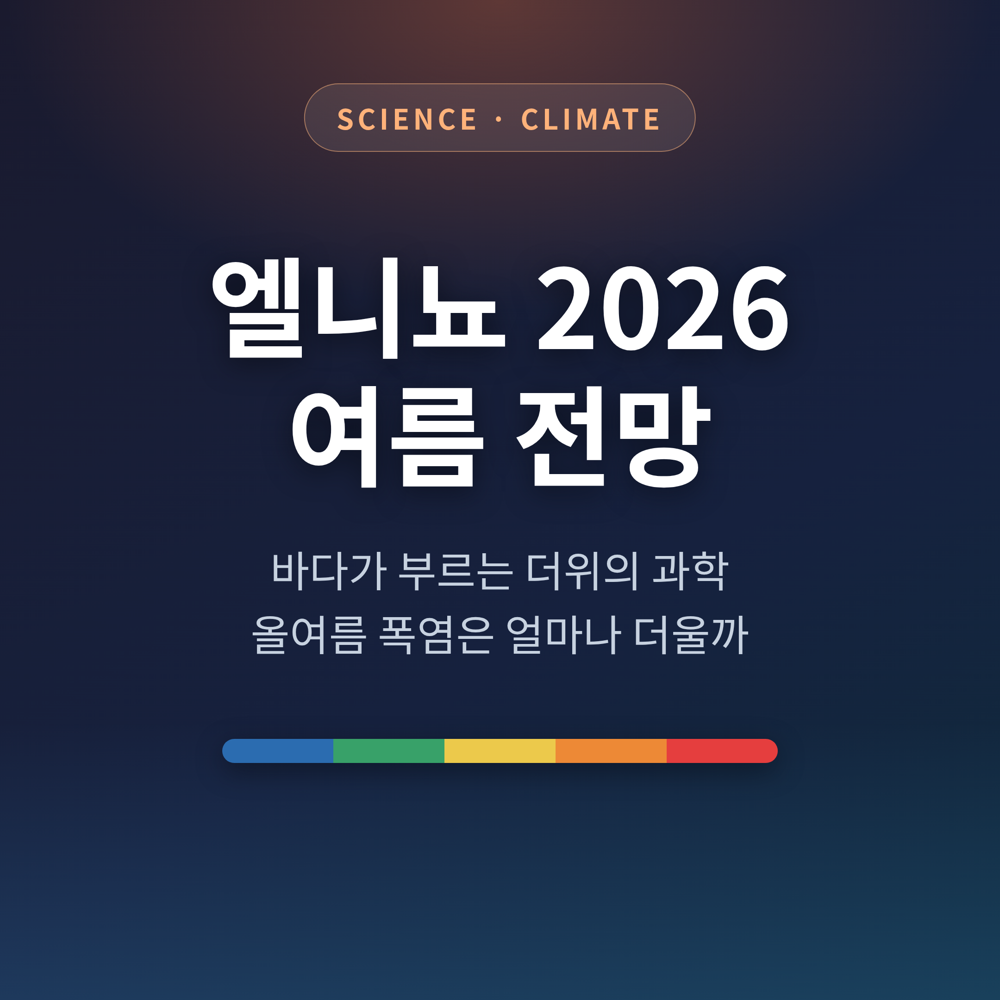
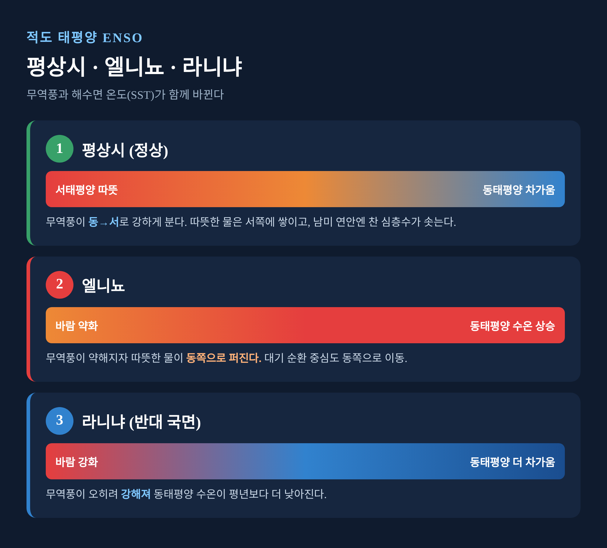
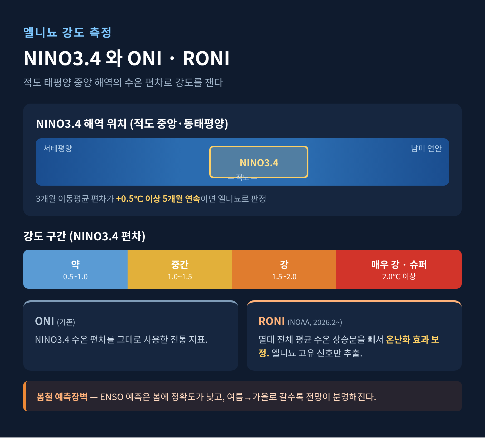
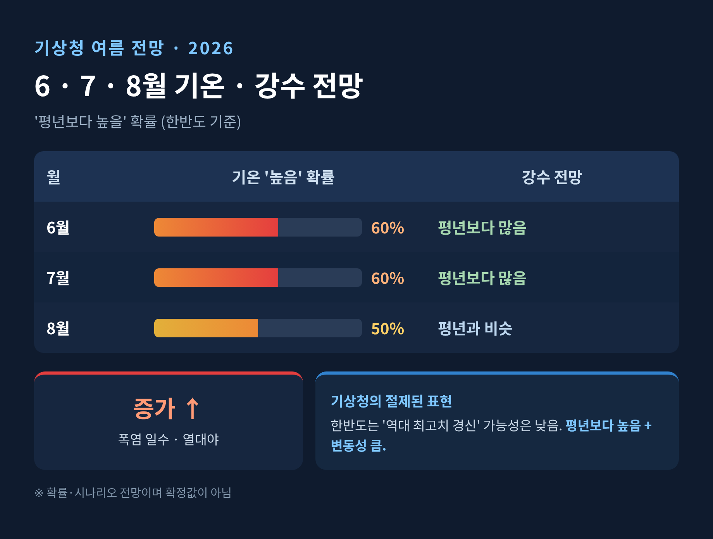

이번 글에서는 엘니뇨 2026과 올여름 폭염 전망을 차분히 정리해 보겠습니다.
엘니뇨는 단순히 바다가 더워지는 현상이 아닙니다.
평상시 적도 태평양에는 동에서 서로 부는 무역풍이 붑니다. 이 바람이 따뜻한 표층 바닷물을 서태평양으로 밀어내고, 남미 연안에서는 차가운 심층수가 솟아오릅니다.
그런데 무역풍이 약해지면 서쪽에 쌓여 있던 따뜻한 물이 동쪽으로 퍼집니다. 동태평양 해수면 온도가 평상시보다 높아지고, 대기 순환의 중심도 함께 동쪽으로 옮겨갑니다.
엘니뇨와 라니냐를 묶어 정식으로는 ENSO라고 부릅니다. 바다의 변화와 대기의 변화가 맞물려 도는 하나의 현상인 셈입니다.
라니냐는 그 반대입니다. 무역풍이 오히려 강해져 동태평양 수온이 평년보다 낮아지는 국면을 말합니다.

엘니뇨의 강도는 NINO3.4라는 적도 태평양 중앙 해역의 수온 편차로 잽니다.
이 해역의 3개월 이동평균 편차가 +0.5도 이상으로 5개월 연속 이어지면 엘니뇨로 판정합니다. 강도는 흔히 약·중간·강·매우 강으로 나누며, 2.0도를 넘으면 '슈퍼 엘니뇨'라 부릅니다.
예전에는 이 지표를 ONI라고 했습니다. 지금은 NOAA가 2026년 2월부터 RONI로 바꿔 쓰고 있습니다.
RONI는 열대 전체 바다의 평균 수온 상승분을 빼서, 지구온난화로 다 같이 더워진 부분을 걷어냅니다. 바다 전체가 더워지는 시대라, '엘니뇨 고유의 신호'만 떼어 보려는 보정인 셈입니다. 기후변화가 측정 방식까지 바꾼 셈이라 흥미롭습니다.
다만 한 가지 한계가 있습니다. ENSO 예측은 봄철에 정확도가 떨어집니다. 이를 봄철 예측장벽이라 부르며, 전망이 분명해지는 시점은 여름에서 가을로 갈수록입니다.

2026년 5월 기준 적도 태평양은 빠르게 엘니뇨로 전환했습니다. 주간 NINO3.4 지수가 +0.9도에 도달했습니다.
발생 확률 자체는 이미 매우 높습니다. 모델 앙상블 기준 2026년 여름철 엘니뇨 확률은 약 98%로, 라니냐 가능성은 사실상 없습니다.
| 항목 | 전망 수치 |
|---|---|
| 여름철(5~7월) 엘니뇨 확률 | 약 98% |
| 매우 강한 엘니뇨(2.0도 이상) 확률 | 63% (NOAA) |
| 5월 기준 NINO3.4 | +0.9도 |
| 예상 정점 시기 | 2026년 가을~겨울 |
NOAA는 정점에서 NINO3.4가 2.0도를 넘을 확률을 63%로 봅니다. 일부 과학매체는 1982~83년 최대치를 넘어설 수 있다는 상단 시나리오를 부각하기도 합니다.
다만 이는 다수 모델의 상단 시나리오일 뿐, 확정이 아닙니다. 불확실성이 크다는 점을 함께 기억하시길 권합니다.
또 하나 짚을 점이 있습니다. 여름에 발달은 하지만 진짜 정점은 보통 가을에서 겨울에 나타납니다. 그래서 이 엘니뇨의 본격적 여파는 2027년 이후로 이어질 수 있다는 전망도 나옵니다.
기상청은 올여름 평균기온이 평년보다 높을 확률을 6월·7월 각 60%, 8월 50%로 봅니다. 배경에는 북인도양과 북태평양의 높은 해수면 온도가 있습니다.
폭염 일수와 열대야 일수도 평년보다 늘어날 가능성이 큽니다. 강수는 6·7월은 평년보다 많고, 8월은 비슷할 전망입니다.
여기서 균형을 잡아야 합니다. 기상청은 한반도에 대해 '역대 최고치를 깨는 극단적 폭염' 가능성은 낮다고 봅니다.
'슈퍼 엘니뇨'라는 강한 표현은 주로 태평양 수온, 즉 글로벌 강도에 관한 것입니다. 한국 여름이 그대로 역대급이 된다는 뜻은 아닙니다. 기상청은 한반도에 대해선 '평년보다 높음, 그리고 변동성 큼'이라는 절제된 표현을 씁니다.
엘니뇨는 스위치가 아니라 판을 흔드는 배경입니다. 폭우가 쏟아질지 폭염이 더 셀지는, 그해의 다른 기압계와 수증기 흐름이 함께 결정합니다.

엘니뇨 시기에는 필리핀해 부근에 고기압성 순환이 발달합니다.
그 가장자리를 따라 고온다습한 수증기가 한반도 남부로 유입됩니다. 장마전선에 수증기가 계속 공급되면 비구름이 강해지고, 특정 지역에 비가 집중될 수 있습니다.
최근 장마의 결도 달라졌습니다. 예전에는 정체전선이 오래 머물렀습니다. 지금은 머무는 기간은 짧아진 대신, 짧은 시간에 막대한 비가 쏟아지는 극한 호우 형태로 바뀌고 있습니다.
태풍은 조금 다른 경향을 보입니다. 엘니뇨 시기엔 태풍이 한반도에서 먼 동쪽 해역에서 발생하는 경향이 있어, 직접 영향을 주는 태풍 수는 오히려 줄어든다는 분석이 거론됩니다. 다만 절대적 규칙은 아닙니다.
대비의 핵심은 '더울 것'이라는 단순 예보가 아닙니다. 변동성에 대한 다중 대비입니다.
같은 해에도 집중호우와 지역 가뭄이 함께 나타날 수 있습니다. 그래서 도시 침수와 물관리를 양쪽으로 준비해야 합니다.
제도도 손질되고 있습니다. 기상청은 2026년 6월부터 기존 폭염경보를 넘어서는 폭염 중대경보와 열대야 주의보를 신설할 계획입니다. 누적 강수를 종합한 통합 기상가뭄 정보도 제공합니다.
생활 현장에서는 냉방 수요 급증에 따른 전력 피크 관리와 취약계층 보호가 중요합니다. 노동 현장은 체감온도 기준에 따른 휴식과 작업 조정이 필요합니다.
물론 이런 대비가 모든 위험을 막아주지는 못합니다. 전망 자체가 확률이라는 한계를 안고 있기 때문입니다.
정리하면 이렇습니다.
엘니뇨 2026은 분명 강한 신호이지만, 한국 여름의 결말까지 정해 놓은 것은 아닙니다.
— 확정된 예언이 아니라, 더위와 폭우가 번갈아 찾아올 수 있는 '판'이 깔렸다는 뜻입니다.
올여름이 얼마나 더울지 묻는다면, 평년보다 더운 여름을 준비하되 비 소식에도 마음을 열어두시길 권합니다.